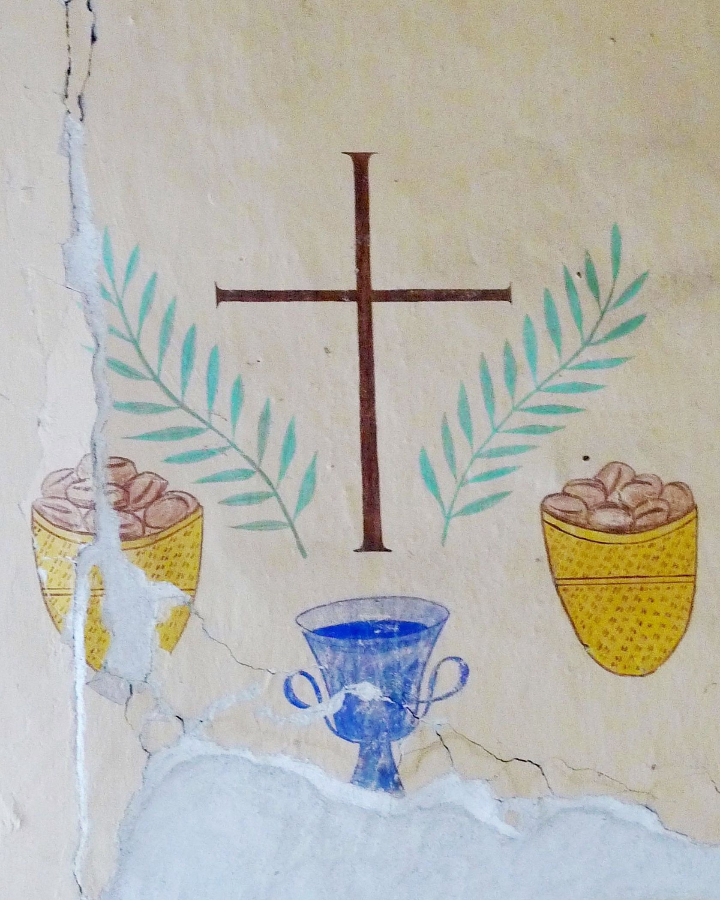

Diese Miniaturen erschienen bis auf wenige Ausnahmen zwischen 2006 und 2008 im «saemann», der Vorgängerzeitung von «reformiert.» Sie führen zu oft übersehenen Orten und Monumenten der bernischen und schweizerischen Kirchengeschichte. Der Umfang war jeweils vorgegeben. Die Texte möchten auf engem Raum in chronologisch-thematischer Ordnung narrativ und kontemplativ eine kleine Theologie entfalten. (RD)
Die spätmittelalterlichen Wandmalereien der Kirche Erlenbach im
Simmental sind berühmt – die vergleichsweise schlichten Fresken in der
Laube des nahen Pfarrhauses weniger. Wer diesen Raum betritt, begegnet
einem betenden Heiligen und einem Engel, der auf ein Spruchband mit der
Seligpreisung «Beati pacifici» (glücklich die Friedenstifter, Mt. 5,9)
hinweist. An der Stirnfront symbolisieren Kelch und Brotkörbe, Ölzweige
und das Kreuz das Passionsgeschehen. Weitere Motive stellen den Leuchter
von Mt. 5,15 und den Weinstock mit den Schossen nach Joh. 15,5 dar.
Der Zyklus dürfte zwischen 1937 und 1942 entstanden sein. Er erinnert an
die damaligen ökumenischen Begegnungen reformierter Berner Pfarrer mit
französischen katholischen Theologen. Diese fanden abwechslungsweise in
der Abbaye Notre Dame des Dombes bei Lyon und in Erlenbach statt –
deshalb hiess der Kreis auch «la cellule d’Erlenbach».
Die Pfarrhauslaube diente jeweils als Kapelle. Frühmorgens wurde dort
die katholische Messe gefeiert. Dies geschah den reformierten Gästen
zugewandt, wobei diese nicht kommunizierten, aber Unservater und
Bekenntnis laut mitbeteten. Abends wohnten die katholischen Teilnehmer
in der Dorfkirche der reformierten Vesper mit Schriftlesung, Auslegung
und Gebet bei. Zu beiden Feiern rief die kleine Glocke aus
vorreformatorischer Zeit. Daneben wurde, von einem erholsamen Ausflug
abgesehen, zünftig und schonungslos theologisch gearbeitet. Man wollte
einander zentrale Inhalte der je eigenen Tradition auch und gerade dann
mitteilen, wenn sie der anderen Seite fremd waren.
Dahinter steckten die Überzeugung, dass Unterschiede nicht nur eine Not,
sondern auch einen Reichtum darstellen, ferner die tägliche Erfahrung
gottesdienstlicher Gemeinschaft und schliesslich die Einsicht, dass
Einheit vor allem Sache des gemeinsamen Gebets sei. Abbé Paul Couturier
(1881–1953), Begründer der «Gebetswoche für die Einheit der Christen»
und zusammen mit dem Erlenbacher Ortspfarrer Richard Bäumlin (1901–1989)
treibende Kraft der «cellule», lernte und lehrte um Einheit beten, «wo,
wann und wie Christus sie will». So erklärte er Ökumene zur Chefsache
und zugleich zur Sache aller. Davon sprechen die zwei Bibelworte an den
Längswänden der Laubenkapelle: «Der Herr ist König, er wird uns
erretten.» (Jes. 33,22) «Einen andern Grund kann niemand legen als den,
der gelegt ist: Jesus Christus.» (1. Kor. 3,11)
1942 fand in Erlenbach die letzte Begegnung der «cellule» statt. Weitere
Treffen verhinderte der Krieg. Die Kapelle wurde wieder zur Laube. Aber
ihre schlichten Fresken sprechen bis heute eine eindrückliche Sprache.
«Glücklich die Friedensstifter»: Engel in der Pfarrhauslaube von Erlenbach. (Bild: Jakob Schmid)
Kelch und Brotkörbe, Ölzweige und das Kreuz verweisen auf das Passionsgeschehen. (Bild: Jakob Schmid)
Dr. Rudolf Dellsperger ist ein Schweizer Theologe und emeritierter Professor für Neuere Kirchengeschichte, Konfessionskunde und Theologiegeschichte an der Universität Bern.
Weitere Artikel von {{ author.author }} finden Sie hier:
Zur Vertiefung:
- Strasser, Otto Erich: «Aus den Anfängen der ökumenischen Bewegung im Bernbiet», in: Gottesreich und Menschenreich, Festschrift für Ernst Staehelin, Basel/Stuttgart 1969, 429–451.
- Hofer, Hans: Die Sankt Michaelskirche von Erlenbach im Simmental, verfügbar unter: Sankt Michaelskirche von Erlenbach.